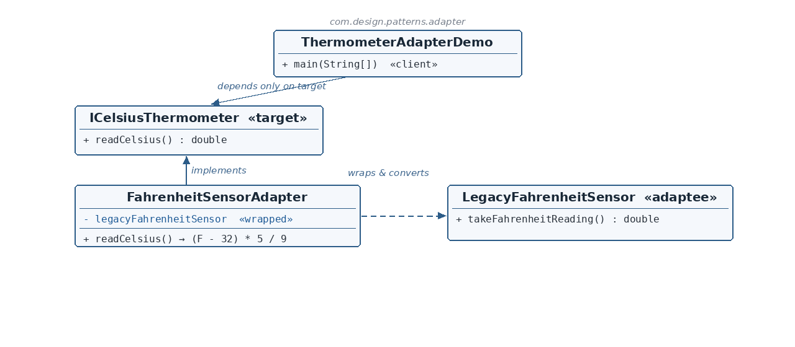

ICelsiusThermometer.java — the Target
☕ 4 min read · 🎬 Video walkthrough · 📊 UML diagram · 💻 Runnable code
⚡ In a nutshell — Convert the interface of an existing class into the interface a client expects — without changing either side.
Convert the interface of an existing class into the interface a client expects — without changing either side. The Adapter implements the Target interface, wraps the Adaptee by composition, and translates between the two vocabularies.
Modern monitoring code wants temperatures in Celsius through a clean readCelsius() call. The plant's installed sensor is a legacy Fahrenheit unit that only knows takeFahrenheitReading(). Neither can change: the client is written against Celsius, the sensor is hardware. The adapter sits between them, converting (F − 32) × 5⁄9 on every read.
ICelsiusThermometer is the Target — the single clean method the client depends on.LegacyFahrenheitSensor is the Adaptee — an incompatible vocabulary (takeFahrenheitReading, returning 98.6°F).FahrenheitSensorAdapter is the Adapter — implements the Target, wraps the sensor (private final composition), and converts units inside readCelsius().
Reading the diagram: the client depends only on the Target. The Adapter implements it and wraps the Adaptee (dashed arrow) — an object adapter. The conversion lives in exactly one place.
ICelsiusThermometer — Target — readCelsius(), what the client expects.LegacyFahrenheitSensor — Adaptee — legacy takeFahrenheitReading().FahrenheitSensorAdapter — Adapter — implements Target, wraps Adaptee, converts F→C.ThermometerAdapterDemo — Client — depends only on the Target.public interface ICelsiusThermometer {
double readCelsius();
}
LegacyFahrenheitSensor.java — the Adapteepublic class LegacyFahrenheitSensor {
public double takeFahrenheitReading() {
return 98.6;
}
}
FahrenheitSensorAdapter.java — the Adapterpublic class FahrenheitSensorAdapter implements ICelsiusThermometer {
private final LegacyFahrenheitSensor legacyFahrenheitSensor;
public FahrenheitSensorAdapter(LegacyFahrenheitSensor legacyFahrenheitSensor) {
this.legacyFahrenheitSensor = legacyFahrenheitSensor;
}
@Override
public double readCelsius() {
return (legacyFahrenheitSensor.takeFahrenheitReading() - 32) * 5 / 9;
}
}
implements ICelsiusThermometer — from the client's viewpoint, the adapter is a Celsius thermometer.private final wrapped sensor — composition, not inheritance: an object adapter. The pairing is fixed at construction.readCelsius() is the translation: take the Fahrenheit reading, apply (F − 32) × 5⁄9. 98.6°F becomes exactly 37.0°C. Two vocabularies, one converter, one place.ThermometerAdapterDemo.java — the clientICelsiusThermometer thermometer = new FahrenheitSensorAdapter(new LegacyFahrenheitSensor());
System.out.println("Celsius reading: " + thermometer.readCelsius());
takeFahrenheitReading() becomes readCelsius().Adapter Design Pattern
Celsius reading: 37.0
InputStreamReader (bytes → characters), Arrays.asList() (array → List) in the JDK.Same sensor, new interface — the conversion lives in exactly one place.
👏 Found this useful? Give it a few claps so more developers discover it, and follow for the whole series — every article ships with a UML diagram, runnable code, a narrated video, and a companion PDF. Happy building! 🚀